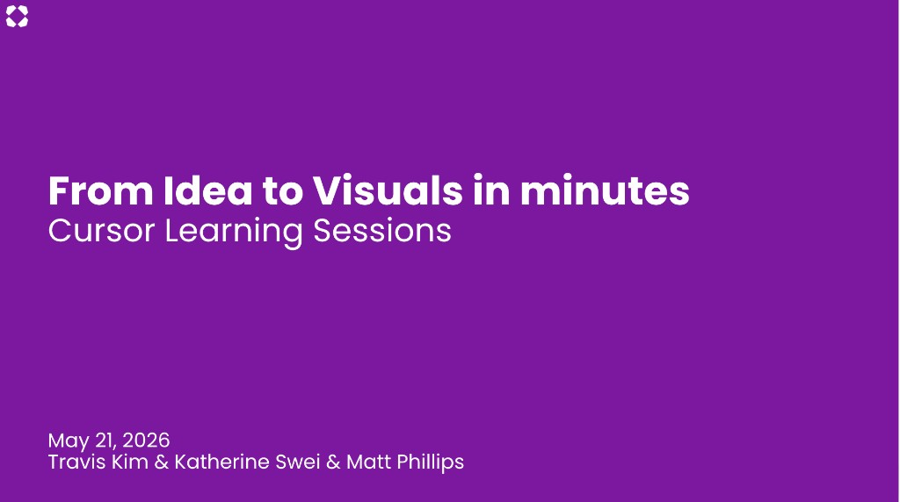

Hey, I'm Katherine.
I hold a Master's in Human Centered Design & Engineering from the University of Washington and a BA in Cognitive Science from UC Berkeley — which shape how I approach problems through both systems thinking and human behavior. I've also worked across B2C products and startups, giving me a broader perspective on user needs and product development.
I'm especially interested in building thoughtful systems that help people work more effectively in complex environments. Currently, I'm designing Core Platform & AI experiences at Wayfair.

My super powers
Clarity from chaos
I bring clarity and structure to messy, ambiguous problems — making complex systems easier for others to navigate and understand.
Systems thinking
I design for the whole system, not just the screen — connecting workflows, edge cases, and how things scale over time.
Prototyping
Prototyping is how I think. I'd rather build something you can click through than describe it in a doc. I use prototypes to pressure-test ideas early, align teams around a shared vision, and turn abstract concepts into something tangible.
AI-assisted craft
I use AI tools to prototype, generate production-ready code, and build agentic workflows that move ideas forward faster.
Growing an AI community at Wayfair
Being a change maker
I enjoy sharing what I learn, so I actively run internal talks and demos to introduce AI workflows and tools. This helps teams adopt AI in their daily work and improves overall efficiency and experimentation across the organization.

When I'm not designing
I'm a huge coffee person and love discovering cute local spots whenever I'm in a new city — it's my way of exploring and getting inspired at the same time.
At night, I moonlight as an amateur cocktail bartender — hosting cocktail nights with friends and turning creativity into something tasty and a little bit magical.
I'm also a big traveler. Experiencing different cultures and meeting people from all kinds of backgrounds keeps me curious — and that curiosity always finds its way back into my work.